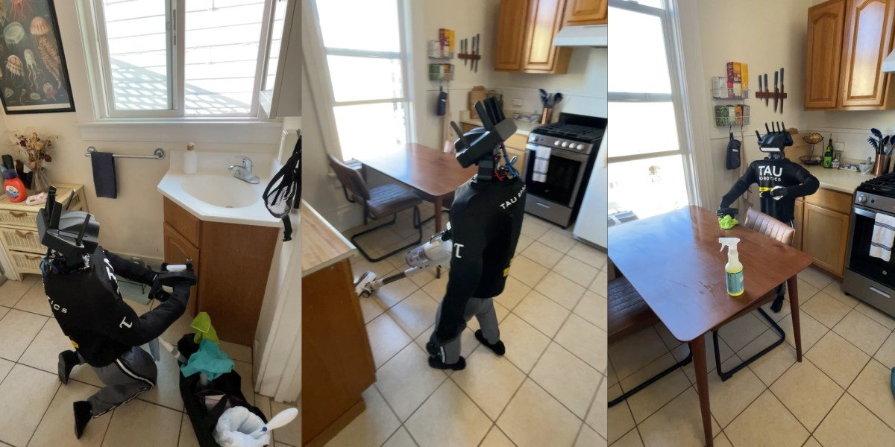

В Сан-Франциске стартап Tau Robotics запускает то, что называет «единственным в мире сервисом уборки гуманоидами»: час работы робота стоит $30, доступ пока только по приглашениям через вайтлист. Услуга анонсирована в начале августа, а 6 ноября корреспондент MIT Technology Review опубликовала колонку с личными впечатлениями — роботы убрали её квартиру.
На вызов обычно приезжают два гуманоида: их привозят на минивэне вместе с супервайзером, роботы умеют подниматься по лестнице и пользоваться лифтом. Инвентарь и средства свои — универсальный очиститель и средство для мытья полов; по желанию заказчика могут взять и его химию. Роботы протирают поверхности, пылесосят, моют полы, убирают санузлы и кухни. С ними можно разговаривать: они отвечают и принимают дополнительные указания — например, не трогать отдельную зону.
Полностью автономными этих роботов называть нельзя: по словам сооснователя и гендиректора компании Алекса Коха, человеком управляемый пульт с поддержкой ИИ решает, когда робот работает сам, а когда оператор перехватывает управление. Сам Кох утверждает, что сервис не отнимает работу у людей-клинеров: по его словам, многие первые клиенты вообще никогда не пользовались услугами горничных — то есть рынок просто расширяется.
Не все уверены, что технология готова к массовому применению: профессор Калифорнийского университета в Беркли Кен Голдберг, 40 лет занимающийся робототехникой, публично сомневается в способностях гуманоидов в домашней уборке. Зато интереса у прессы хоть отбавляй — сервис уже показали BBC, Reuters, AP, USA Today и Euronews, а компания открыто публикует отзывы клиентов у себя на сайте.
Пока это пилот: только Сан-Франциско, только приглашённые дома и обязательный взрослый дома, если в квартире остаются дети. Но это первый случай, когда домашний гуманоид стал не демо на выставке, а товаром с прайсом и расписанием.